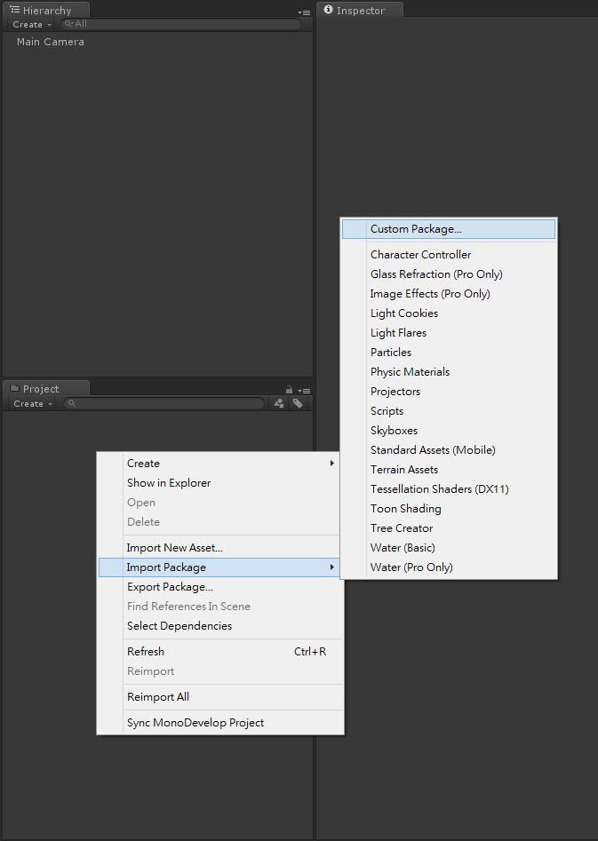
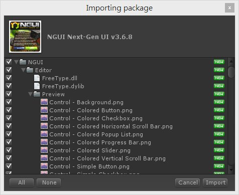
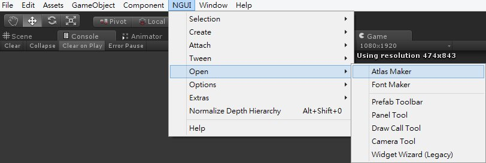
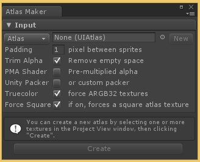
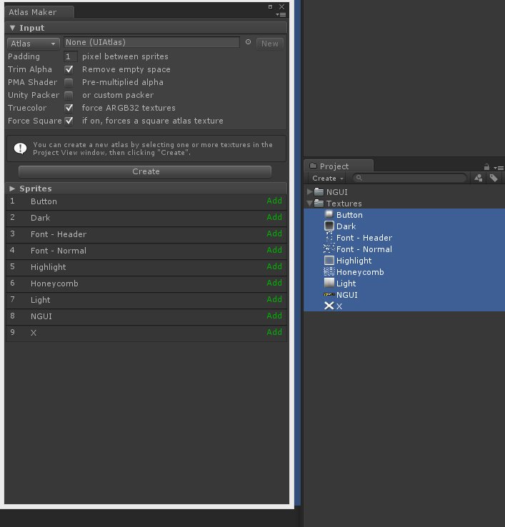
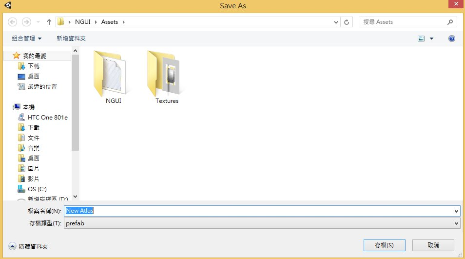
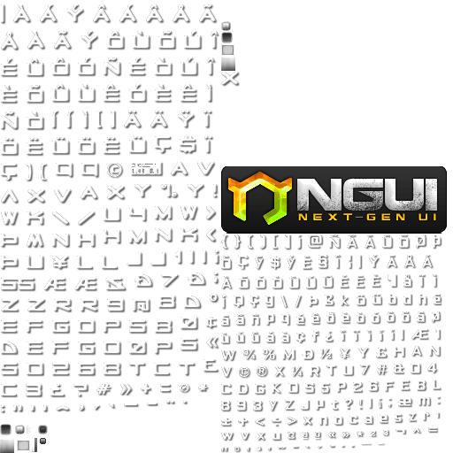

雖然 Unity 4.6 Beta 已經出來了，網路上也已經有不少新版 uGUI 及 NGUI 的系列教學
但因為還是會有人問到 NGUI 的相關問題
所以一方面用來記錄自己使用 NGUI 的心得，一方面希望能提供給剛開始使用 NGUI 的人一點方向
這個系列教學中所使用的 NGUI 版本為 3.6.8
NGUI插件導入
這裡提到的導入方法適用於任何Unity插件
當我們開啟一個新的Unity專案後
在 Project 面板中點選右鍵
選擇 Import Package → Custom Package 加入 NGUI.unitypackage

選擇好插件後按下開啟會出現導入畫面
點選Import即可導入NGUI插件

NGUI圖集製作
導入好圖集後要來製作我們的第一張圖集
這裡使用的圖片為 NGUI 裡的原生圖片
點選 NGUI → Open → Atlas Maker


接著選取自己的圖片後按下Create

設定好儲存路徑後按下存檔

即產生NGUI圖集

這裡稍微描述一下Atlas Maker裡的參數
Padding： 設置圖片間的距離( 單位為pixel )
Trim Alpha： 是否移除空白區塊
PMA Shader： 勾選時，預設 Shader 為 Unity/Premultiplied Colored
PMA Shader： 未勾選，預設 Shader 為 Unlit/Transparent Colored
Unity Packer： 選用Unity內建打包方式或是NGUI自訂打包方式
Truecolor： 圖集格式儲存為ARGB32
Force Square： 圖集預設為2的次方